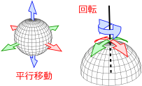
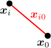
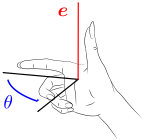
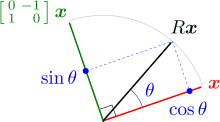
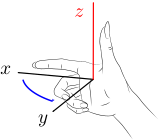
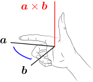

10.剛体の座標・速度
剛体の状態（位置と姿勢）は、剛体上の1点の位置
剛体の運動方程式(
この章からは、「回転するこま」や「床を転がるボール」といった、剛体の運動を扱う。剛体とは、大きさを持っており、かつ、変形は無視できる物体のことである。前章までは、大きさを無視できる物体（＝質点）を主に扱ってきたが、その理解をもとに、現実的な大きさを持つ物体へと議論を進めていくわけである。
知りたいのは、剛体の運動を求める方法である。ここで、剛体を、無数の質点（＝質点要素）の集合とみなせば、前章までの質点の理論が援用できそうである。質点要素の運動を決めれば、剛体の運動も決まるというわけである。ただし、剛体を考えているので、質点要素は自由に運動できるわけではなく、物体が変形しないという拘束条件が課せられている。この拘束条件は、「質点要素間の距離が一定である」と表せる：（
しかしこのままだと、無数にある質点要素の全てについて時間発展を追う必要があり、直接解くのは難しそうである。そこで変数の数を減らすため、第9章のように、運動方程式(
この章では、剛体の自由な座標
剛 体 の 位 置 と 回 転 を 分 離 す る 回 転 行 列 の 自 由 な 速 度 の 自 由 な 座 標
10.1剛体の位置と回転を分離する
拘束条件(
剛体の自由度は
剛体を構成する質点要素
【10.1-注1】剛体の自由度は

剛体の自由な座標が6自由度であることは、右図のように地球を例にとって考えることで推測できる。まず、地球の中心位置は任意なので平行移動の
剛体の配置は
剛体上の任意の1点

残りは、回転に対応する自由度である。まず、拘束条件(
実際にやってみよう。式(
【10.1-注2】
導出
回転行列
剛体の回転は、回転行列
この条件式(
式(
【10.1-注3】回転行列
以下の条件
補足
[1] 式(
[2] 式(
[3] 回転行列の例として、
10.2回転行列
回転行列
まず、回転行列
では、式(を 右 に 括 り 出 し た 式
ところで一般に、「単位ベクトル
【10.2-注1】ロドリゲスの回転公式
「単位ベクトル

ただし、
図解

図解するために、まず、2次元の場合を考える。この場合、ベクトル

【10.2-注2】ベクトルのクロスとクロス積

[1] 3次元ベクトル

[2] クロス
大 き さ が 作 る 平 行 四 辺 形 の 面 積 向 き 両 方 に 垂 直
[3] 有用な公式として、反対称性（＝ベクトルの入れ替えで符号が変わること）：
証明
10.3
回転運動の自由な速度として角速度
さて、欲しかったのは、回転行列
【10.3-注1】角速度
回転行列
証明
自由な座標の例
このように、角速度
【10.3-注2】オイラー角
まず、
任意の回転行列
角速度との関係
オイラー角の微分